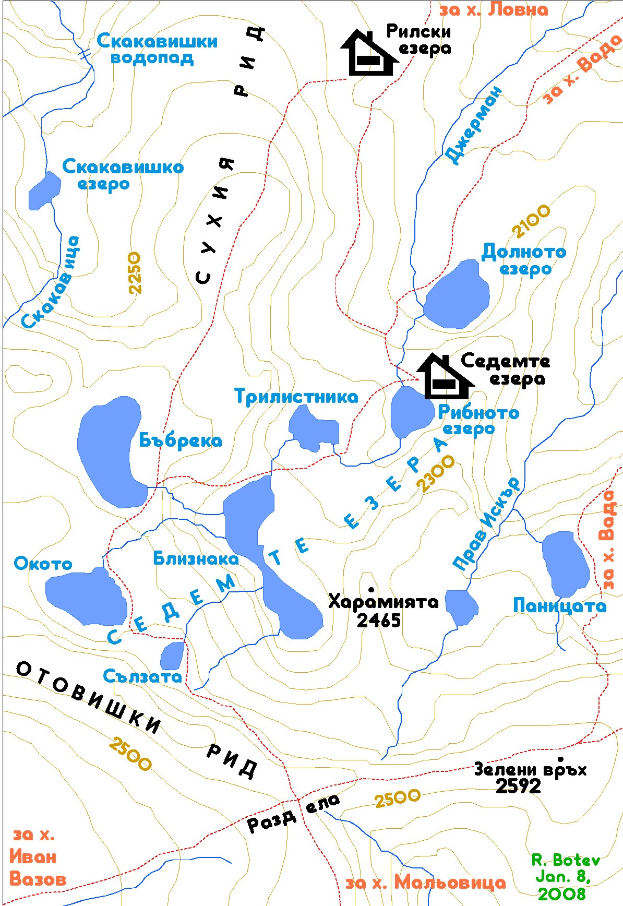
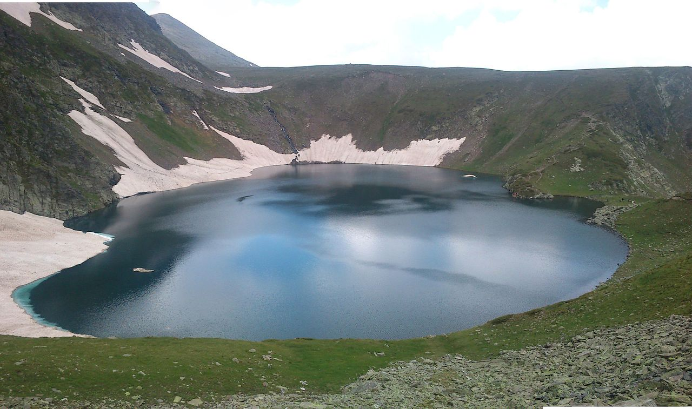
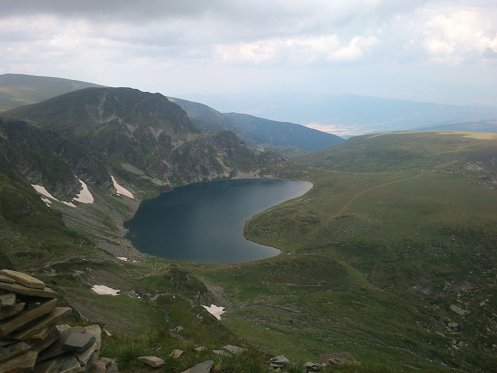
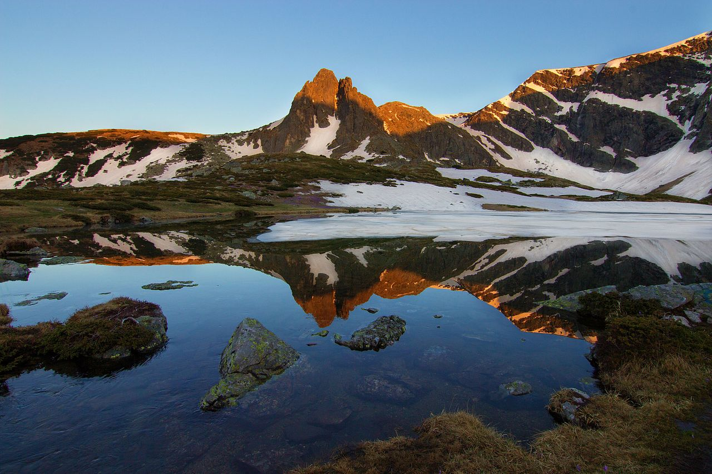
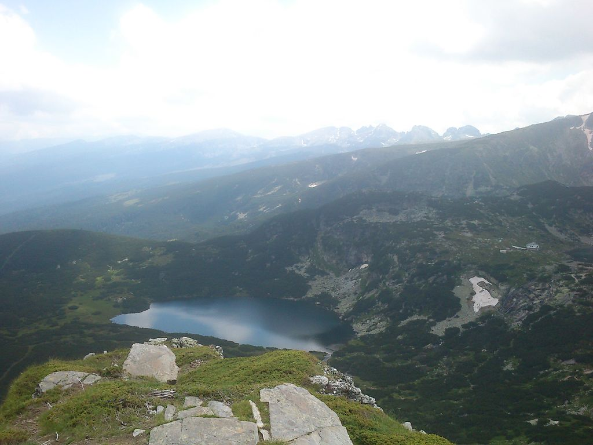
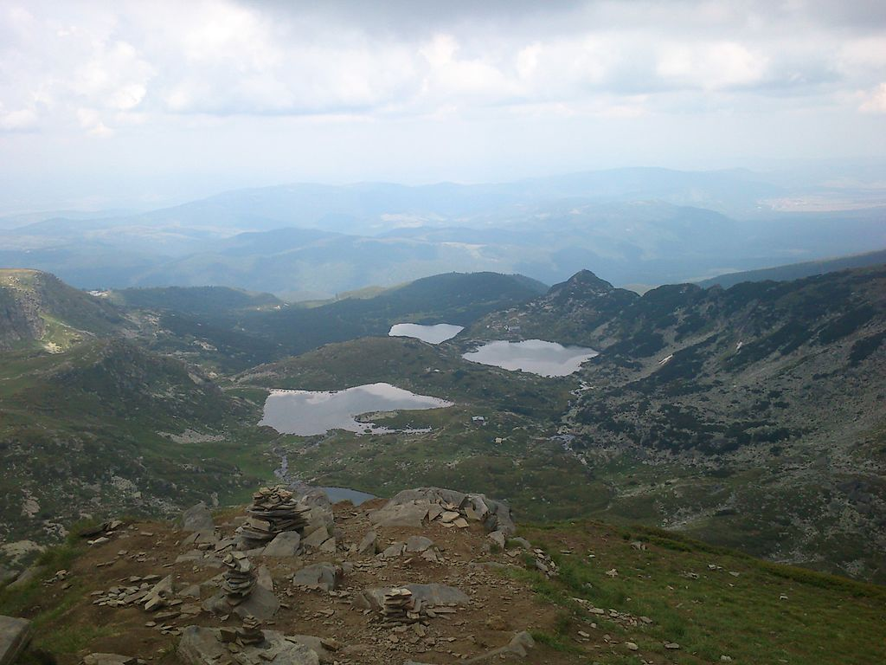

Седемте рилски езера е група езера с ледников произход, разположена в планината Рила. Това е най-посещаваната от туристи езерна група в България и е един от стоте национални туристически обекта.
Езерата се намират в Дамгския дял на Северозападна Рила и са разположени стъпаловидно между 2095 и 2535 m н.в. Заемат вдлъбнатини по склона на планината, като отделните езера са свързани помежду си чрез малки поточета. При преминаването на водата по тези поточета са образувани малки водоскоци и водопади.
Първите три езера – Сълзата, Окото и Бъбрека – се оттичат всяко поотделно в Близнака, от който водата преминава последователно през Трилистника, Рибното и Долното езеро. През последните две езера минава един вече по-мощен поток, който, изтичайки от най-долното езеро, дава началото на река Джерман (ляв приток на Струма).
Първите три езера – Сълзата, Окото и Бъбрека – се оттичат всяко поотделно в Близнака, от който водата преминава последователно през Трилистника, Рибното и Долното езеро. През последните две езера минава един вече по-мощен поток, който, изтичайки от най-долното езеро, дава началото на река Джерман (ляв приток на Струма).
Името на всяко от седемте рилски езера отразява някоя особеност на съответното езеро. Езерото, което е разположено на най-голяма надморска височина, носи името Сълзата заради прозрачността на водите. Следващо по височина на разположение е Окото (наричано още Сърцето), което е с приблизително овална форма. Окото е най-дълбокото циркусно езеро в България – дълбочината му е 37,5 m.
Бъбрека е езерото с най-стръмните брегове от цялата група.
Четвъртото езеро е Близнака; то е най-голямото по площ от седемте.
Езерото Трилистника е с неправилна форма и невисоки брегове. Най-плитко е Рибното езеро; на североизточния му бряг се намира хижата „Седемте езера“. Най-ниско разположено е Долното езеро, от което води началото си река Джерман.
Легендата за седемте рилски езера разказва, че преди хиляди години, когато на земята още нямало хора, в планината Рила живеели двама великани – мъж и жена. Те се обичали безумно и боготворели красотата и уюта на своя дом.
Домът им бил толкова привлекателен, слънчев, топъл и уютен, че нямало как да не очарова всяко живо същество, а на любовта им се радвали всички стихии и целият свят.
Домът им бил толкова привлекателен, слънчев, топъл и уютен, че нямало как да не очарова всяко живо същество, а на любовта им се радвали всички стихии и целият свят.
Великанът защитавал яростно всяко стръкче тревичка, всяко малко поточе или цвете, бранел своята любима и отбивал атаките на злите сили. Това обаче само разпалвало огромната им злоба и жестокост и те решили да свършат пъкленото си дело докрай.
В една тежка битка младият великан паднал убит. Доволни от своята победа, злите сили си тръгнали, оставяйки след себе си разчупени скали, опропастени долини и една съсипана от скръб жена. Мъката на младата вдовица била толкова голяма, че сълзите ѝ бликали безспир и се стичали по хребетите право в долините. Леели се и се събирали в доловете, докато образували бистри езера с изумителна чистота.
Преди езерото Бъбрека планинските водачи показват огромна скала, намираща се в посока към езерото Сълзата. Формата на скалата наподобява фигурите на мъж и жена с огромни размери. Според легендата това са двамата влюбени, които ще останат да пазят вечно своя красив дом.